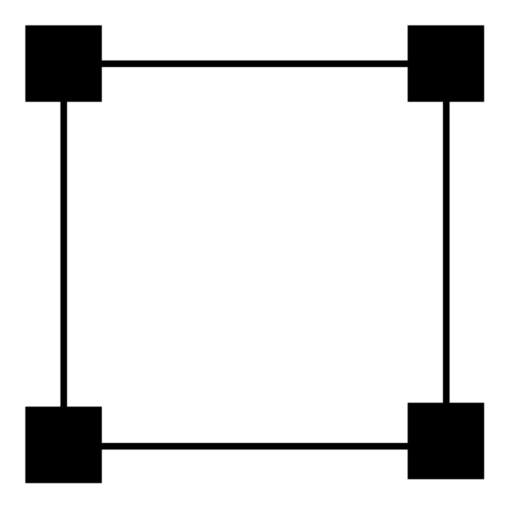

34 Les espaces haut-parlants
Une fois n’est pas coutume, nous allons aborder le problème de la spatialisation par sa fin : le système de diffusion. De quoi parle-t-on lorsque l’on parle d’un système « immersif ». À vrai dire, que qualifie réellement ce terme « immersif » ?
Si nous raisonnons simplement, notre expérience naturelle du son est immersive. Nous sommes (plus ou moins) capables d’identifier la position d’un évènement sonore dans l’espace. Dès lors, placer une enceinte dans un lieu est déjà une expérience immersive. En effet, nous pouvons nous déplacer autour, nous en éloigner, nous rapprocher, etc. Aussi, la réverbération naturelle du lieu va aussi créer une sensation d’enveloppement, plus ou moins grande, en fonction de son temps de décroissance et de sa puissance sonore.
Nous commençons donc à pressentir qu’il ne faut pas confondre l’espace d’écoute, situé après les enceintes, et l’espace produit, situé avant les enceintes. Quand on nous parle d’« immersif », c’est bien à l’espace produit que l’on fait référence. Selon la formule de Jean-Marc Duchenne, on définit ainsi l’espace haut-parlant comme ce que l’on donne à entendre.
34.1 Catégorisation des espaces haut-parlants
On peut généralement différencier deux types de spectacle sonores : ceux où la position de l’auditeur est connue et fixe, et ceux où l’on ne peut pas présupposer du positionnement de l’auditeur. Par exemple, lors de l’écoute d’un disque, on suppose que l’auditeur se positionnera au point d’écoute idéal (sweetspot), qui était alors la même place que l’ingénieur du son pendant sa production. À l’inverse, en muséographie, l’auditeur se déplace en permanence et, même si souvent guidés par un sens de visite, ses déplacements sont aléatoires.
Ces deux grandes catégories ont une forte influence sur le choix des technologies de spatialisation.
Le cas du concert amplifié est un peu plus ambigu. Les zones dédiées au public sont connues à l’avance, et l’on suppose que celui-ci ne se déplace pas pendant le spectacle. Cependant, on cherche à tout prix à éviter la création d’un sweetspot. Cela impliquerait que le rendu sonore serait idéal pour quelques personnes et médiocre pour le reste du public. On parle alors de zones de diffusions, que l’on tente de rendre aussi homogènes que possible. Ce travail est celui du caleur système.
On considère d’ailleurs souvent que les mixages live sont monophoniques, et que le distribue le même mixage sur plusieurs points de diffusion. Cela se nomme la « multi-mono ». Ici, la nécessité de multiples points de diffusions relève de l’homogénéité de la diffusion, et rarement du souci de la spatialisation. Cependant, les techniques de spatialisation permettent aussi d’accroître cette homogénéité, tout en ajoutant une dimension spatiale au spectacle.
Le second cas, où l’auditeur est libre de ses déplacements, donne également la plus grande liberté sur le choix du système à déployer. Les haut-parleurs pourront alors peupler l’espace en n’importe quel point et deviennent alors un élément à part entière de la création sonore. On pourrait même envisager le choix d’un haut-parleur pour une réponse en fréquence particulière, ou pour tout autre défaut qui pourrait prendre sens dans la narratologie d’une œuvre. Cette approche a été un des points de réflexion centraux de la musique concrète et acousmatique. Les espaces haut-parlants supposant un emplacement d’écoute idéal sont les plus courants. Ils concernent la musique enregistrée, le cinéma et une grande majorité du spectacle vivant.
34.2 Les systèmes de diffusions
On peut sous-catégoriser les espaces haut-parlants en caractérisant le système de haut-parleurs utilisé. On distingue ainsi quatre grandes familles :
- Les systèmes frontaux
- Les systèmes englobants à une dimension
- Les systèmes englobants à deux dimensions
- Les systèmes à trois dimensions
On considère ici un système de coordonnées sphérique, comprenant donc la distance ( \(\rho\) , sur le schéma ci-dessous), l’azimut ( \(\Theta\) ) et l’élévation ( \(\delta\) ). Ce repère offre l’avantage d’être au plus proche de notre perception de l’espace.
Dans la première catégorie, on retrouve notamment deux systèmes historiques : la monophonie et la stéréophonie. Le premier se résume par un espace haut-parlant comprenant un unique haut-parleur. Le second est décrit comme un espace haut-parlant comprenant deux haut-parleurs, formant un triangle équilatéral avec l’auditeur. On pourra également évoquer le système LCR, principalement associé au cinéma. En spectacle, on trouve parfois des systèmes en lignes d’enceintes, comme le L-ISA d’L-acoustique, ou encore certains systèmes utilisant la WFS (voir le chapitre 39)
Les systèmes englobants à une dimension comprennent l’ensemble des systèmes de haut-parleurs encerclant l’auditeur, offrant ainsi un degré complet de liberté de spatialisation. Le mixeur peut ainsi placer un son tout autour de l’auditeur en changeant son angle d’incidence. On pense alors au système quadriphonique, et à tous les systèmes de cinéma dit « surround » : LCRS, 5.1, 7.1, etc.
Les systèmes englobants à deux dimensions rajoutent un nouvel axe de liberté, permettant d’élever un son. Le Dolby Atmos est sans doute le représentant le plus connu de cette famille de système. Ces systèmes sont le plus souvent, pour des raisons physiques évidentes, demi-sphériques, et seule l’élévation positive y est possible. Ces dômes peuvent prendre des formes diverses et variées, avec plusieurs couronnes d’enceintes en hauteur.
Les derniers systèmes, et également les plus rares, sont les systèmes proposant trois axes de liberté. On a donc un maillage d’enceinte ponctuant l’espace et permettant ainsi de créer des effets de profondeurs, non pas par des moyens perceptifs (rapport de volume, réverbération, etc.), mais pas des moyens physiques (enceinte réellement présente au point de diffusion).
Afin de simplifier le vocabulaire, on admettra que « surround » est synonyme de systèmes d’enceintes englobant à une dimension, et, que « immersive » et « 3D » son synonyme de système englobant à deux dimensions.
34.3 Une simple analogie image-son
La notion d’échantillonnage d’un signal se retrouve dans de multiples disciplines, notamment celles de l’image et de la vidéo. Par exemple, une image diffusée sur un écran est spatialement échantillonnée. Un peu comme les peintres impressionnistes qui créaient l’illusion d’une image unie à partie de touche de pinceau distincte, on retrouve ici un principe parfaitement analogue. Une image numérique est donc cadre d’un certain nombre de points, et chacun de ces points s’appelle un pixel. C’est le plus petit grain d’une image. Si l’on utilise trop peu de pixels pour décrire une image, ceux-ci deviennent plus gros, et l’on distingue alors ces pixels, et l’illusion d’une image unie est perdue.
La notion intéressante rendue évidente par le traitement de l’image est la notion d’échantillonnage de l’espace. Dans le champ d’application du son, cette « résolution d’espace » existe aussi, et est directement liée au nombre de haut-parleurs. Plus le nombre de haut-parleurs est grand, plus la cohérence de notre espace haut-parlant sera grande. On pourrait alors qualifier les systèmes mono, stéréo, voir 5.1 et 7.1 de systèmes basse résolution.
Gardons bien en tête cette idée d’échantillonnage d’espace, car c’est exactement le sujet de l’ambisonique. La WFS reprend aussi cette d’échantillonnage, mais l’applique au front d’onde de l’onde sonore.
Si l’on prend en exemple le système stéréophonique, nous avons à notre disposition deux enceintes, une à gauche de l’auditeur et une à sa droite. De manière assez évidente, si nous envoyons un signal seulement sur l’enceinte gauche, le son semblera venir de la gauche et vice-versa. Alors, que se passe-t-il lorsque nous envoyons le même signal (amplitude et phase identique) sur les deux enceintes ? Il se créer alors un effet psychoacoustique qui va nous donner l’illusion que le son provient du « centre de gravité » du système (barycentre serait plus juste). Ce phénomène se nomme centre fantôme. Si l’on introduit un écart de gain entre les deux enceintes, cette source fantôme se déplace vers l’enceinte la plus forte. Il s’agit alors d’une forme d’interpolation. On déduit ainsi des points de diffusions physiquement inexistants grâce aux points de diffusions réels environnants.
Par rapport à notre question de résolution, plus celle d’un système est faible, plus on peut supposer que l’espacement entre les enceintes sera grand. Le poids mis sur cette stratégie d’interpolation est alors plus important, jusqu’au point où l’illusion du centre fantôme cesse d’opérer.
34.4 Études des systèmes normés
34.4.1 Les systèmes frontaux
La monophonie n’offre évidemment aucun axe de liberté pour à la spatialisation. On pourra éventuellement « tricher » un effet de profondeur en jouant sur le volume des sources sonores et sur le mixage de la réverbération. Depuis la fin des années soixante, la norme de production et d’écoute est la stéréophonie. La stéréophonie repose sur deux enceintes, formant un triangle équilatéral avec l’auditeur. Elle offre alors une scène sonore de 60° face à l’auditeur, et donc un premier axe de liberté dans la spatialisation. Il semble évident que l’on ne peut pas faire jouer un son plus à gauche que l’enceinte gauche, et plus à droite que l’enceinte droite. Dès lors, les axes formés par chacune des enceintes avec le point d’écoute idéal sont des frontières infranchissables par les sons.
Le transaural est une technique de spatialisation qui permet, dans une certaine mesure, d’effacer ces frontières. Mais cela vient avec un certain nombre d’inconvénients détaillé dans la chapitre 35.3.
Chacune des enceintes est alimentée par un signal audio dédié. On associe alors au système de diffusion stéréophonique un mixage stéréophonique, comptant deux canaux.
Il ne faut pas confondre « stéréophonie » et « deux canaux ». Si la stéréophonie implique un mixage sur deux canaux, un mixage sur deux canaux n’implique pas de la stéréophonie. Par exemple, une écoute au casque n’est pas une écoute stéréophonique. Un mixage binaural repose aussi sur deux canaux, mais n’est pas du tout indiqué pour une écoute sur un système stéréophonique.
Comme nous l’avons vu précédemment ( chapitre 33 ), au cinéma, le besoin d’un canal central, caché derrière l’écran, c’est très rapidement fait sentir, principalement avec l’essor des formats larges-écrans type Cinerama et Cinemascope. On trouve donc des systèmes LCR, soit « left », « center », « right ». Cependant, le support optique de la pellicule ne permet pas d’y stocker plus de deux canaux. On réalise alors un matriçage, permettant de réduire le mixage LCR sur deux canaux (appelés Lt, pour « Left total » et Rt, pour « Right total »), puis, à la diffusion du film, on opère le dématriçage vers le système LCR. Le canal central est alors alimenté par la sommation des canaux L et R.
Le canal central est alors formé par les signaux en phase du matriçage bicanal.
Une telle réduction n’est pas indolore sur le signal, et nuit largement à la cohérence d’espace de la diffusion.
34.4.2 Les systèmes englobants à une dimension


La quadriphonie est le premier système de ce type marquant, apparu dans les années soixante-dix. On place alors les quatre enceintes en carré et l’auditeur au centre. On notera ainsi que les angles enceintes-auditeur sont de 90°, soit 30° de plus que la stéréophonie. Nous pouvons déduire que l’on gagne globalement en couverture spatiale, mais l’on perd en précision sur les sources fantômes.
Son homologue dans le monde du cinéma est le LCRS, composé de trois enceintes frontales (gauche, centre, droit) et d’une enceinte arrière. La position exact des enceintes en cinéma est toujours un sujet délicat. On considère généralement que les enceintes gauche et droite forme une stéréophonie (plus ou moins 30°) auxquelles ont rajoute une enceinte centrale et une enceinte arrière (respectivement 0° et 180°). Cependant, la diffusion cinématographique n’est pas vraiment tournée vers un point précis. En effet, il convient de convenablement couvrir l’ensemble des spectateurs de la salle. Alors, dans les auditoriums de mixage ainsi que dans les salles, cette preservation d’angles est somme toute assez relative.
Le système LCRS est un système historique et n’est plus du tout utilisé aujourd’hui. La quadriphonie quand à elle continue d’avoir une certaine popularité. On peut y avoir deux phénomènes : une nostalgie toujours plus présente pour le “vintage”, mais aussi une certaine facilité de prise en main pour les artistes. Il est en effet assez facile d’expliquer la quadriphonie comme quatre espace stéréophoniques (même si ce n’est pas rigoureusement exact).
C’est grâce à la transition du son analogique vers le son numérique que l’on voit apparaître de nouveaux systèmes de diffusions englobants. Toujours dans le cinéma, le premier et le plus connu est le système 5.1, défendu par Dolby et par DTS.
Il s’agit au final d’une simple extension du système LCRS, que l’on va augmenter d’un canal de LFE distinct et d’un canal arrière supplémentaire. Alors, le terme arrière est un peu exagéré, car ces enceintes sont placées à plus ou moins 110 degrés de l’enceinte centrale. On a donc plutôt un placement latéral, légèrement décalé vers l’arrière. On notera aussi l’écart important entre les canaux latéraux avant et ces canaux arrière, grand de 80°. Pire, les enceintes arrières sont séparées d’un angle de 140°. Il est donc délicat d’envisager un placement de sources fantôme à l’arrière de l’auditeur. Aussi, il est plus sage de considérer, lors d’un mixage, qu’un système 5.1 n’offre qu’une scène sonore que de 220°.
Le système quadriphonique est quelque part plus homogène et couvre un espace plus grand que le système 5.1. Par contre, sa définition et sa précision sont moindres sur l’espace frontal.
Le système 5.1 est défini dans la recommandation de l’ITU (International Union Broadcast) n° BS.775-1. On note d’ailleurs que le placement des enceintes possède une marge de tolérance, celles-ci pouvant être placées entre plus ou moins 100° jusqu’à plus ou moins 120° du centre.
Cette recommandation de l’ITU propose également un ordonnancement des canaux. En effet, ce sujet n’est pas normé, et donne lieu parfois à certaines erreurs de rendus. L’ITU propose alors de ranger les canaux dans l’ordre suivant : gauche, droit, centre, LFE, arrière gauche, arrière droit. Cependant, Pro Tools, logiciel de mixage et montage son le plus répandu dans le monde professionnel, adopte l’agencement suivant : gauche, centre, droit, arrière gauche, arrière droit, LFE. Il convient alors d’être excessivement vigilant quant à la diffusion d’un contenu 5.1, et de bien vérifier le bon routage de chaque canal.
Le format marquant suivant est le 7.1 Dolby Surround. On conserve alors le 5.1 que nous avons déjà décrit et y rajoutons deux enceintes, véritable arrière gauche et arrière droit. Il s’est principalement imposé en salle de cinéma.
Nous pouvons également évoquer un système supplémentaire, l’octophonie, mais qui n’a pas eu de réelle exploitation commerciale. En d’autres termes, son utilisation s’est bornée à l’exploitation lors de spectacles vivants, sans intégrer la problématique du stockage, du transport et de la restitution antérieure du programme. Il s’agit cependant de systèmes relativement classiques.
L’octophonie est un nom que l’on rencontre assez fréquemment. Cependant, son nom est souvent rattaché à deux systèmes différents. Dans ce livre, nous appellerons « octophonie » un système de haut-parleurs régulièrement positionnés sur un cercle. Les enceintes sont alors toutes espacées de 45°. On peut voir ce système comme une augmentation de la résolution de la quadriphonie. Cette octophonie offre deux avantages : sa couverture est homogène et sa densité satisfaisante.
L’autre système associé à l’octophonie est le cube, que nous aborderons dans la section suivante.
34.4.3 Les systèmes englobants à deux dimensions
Avant de nous attarder sur un autre (encore) format de spatialisation de Dolby, nous pouvons faire un détour par le Japon. La société NHK (Nippon Hōsō Kyōkai, ou compagnie de télédiffusion japonaise) fait partie du réseau de télédiffusion publique japonaise. Celle-ci possède une branche dédiée à la recherche nommée « NHK Science & Technology Research Laboratories ». Ils ont alors proposé un nouveau format de son « surround » : le 22.2.
Ce système propose trois niveaux d’élévation : un au sol, un à hauteur d’oreille, et un dernier positionné en hauteur. On y ajoute également une enceinte dite de « voice of god », placée au-dessus de la tête de l’auditeur.
- Le niveau inférieur est constitué de trois haut-parleurs frontaux
- Le niveau moyen est composé de dix haut-parleurs. On pourra alors le décomposer comme une octophonie (une enceinte tous les 45°), plus deux enceintes supplémentaires sur la scène frontale.
- Le niveau supérieur comporte huit haut-parleurs, disposés comme une octophonie, plus une enceinte juste au-dessus de l’auditeur.
Ce dispositif offre une couverture relativement homogène de l’espace et surtout plus dense que la plupart de ces concurrents. Malheureusement, hors du Japon, ce système n’est pas du tout répandu.
A consulter, le document de NHK sur son 22.2.
Revenons aussi sur nos questions d’octophonie. Cette appelation est parfois utilisée pour parler d’un système de haut-parleur cube composé de deux plans :
- une quadriphonie au sol
- une quadriphonie en élévation
On couvre ainsi une sphère complète, mais avec une résolution plutôt faible. On met ici beaucoup de pression sur l’effet de source fantôme.
Nous pouvons aussi aborder les systèmes définis algorithmiquement. On indique alors un nombre de haut-parleurs souhaités, et l’on obtient un arrangement de points dans l’espace positionnés homogènement.
Si le placement de point de façon homogène sur un cercle paraît être une tâche triviale, ce n’est pas du tout le cas pour une sphère.
Retenons deux lois de répartitions importantes :
Nous reviendrons plus particulièrement sur ces maillages lors de leurs utilisations dans le cadre de l’ambisonique. En dehors de ce cas, ces lois peuvent être utilisées dans la construction de dômes où de sphères de haut-parleurs.
Enfin, nous avons donc les arrangements de haut-parleurs associés au Dolby Atmos. Le plus commun est le 7.1.4, reprenant un 7.1 Dolby et y rajoutant une quadriphonie en élévation. Une première réduction consiste à réduire la couche d’élévation à deux canaux (7.1.2). On trouve également les 5.1.4 et 5.1.2, reprenant la même logique.
Plus intéressant, le Dolby Atmos propose aussi un format 9.1.6, qui apporte enfin une homogénéité correcte, au moins sur le plan principal.
Les techniques de mixage entourant le Dolby Atmos sont très différentes des techniques classiques, reposant sur des lois de panoramiques. Le Dolby Atmos est avant tout un format de mixage orienté objet. Nous abordons cet aspect dans le chapitre 45.
Si Dolby possède aujourd’hui la force de frappe la plus importante, on trouve tout de même quelques acteurs pour tenter de lui faire concurrence. DTS propose son propre format de mixage orienté objet, nommé DTS:X. Les systèmes de diffusion sont cependant calqués sur ceux de Dolby. On retrouve aussi Auro 3D, également avec son propre format de mixage orienté objet. Compatible avec les systèmes Dolby Atmos, on retrouve aussi le 13.1 (7.1.4, plus une enceinte centrale sur le plan d’élévation et une “voice of god”) et 11.1 (5.1.4, plus une enceinte centrale sur le plan d’élévation et une “voice of god”).